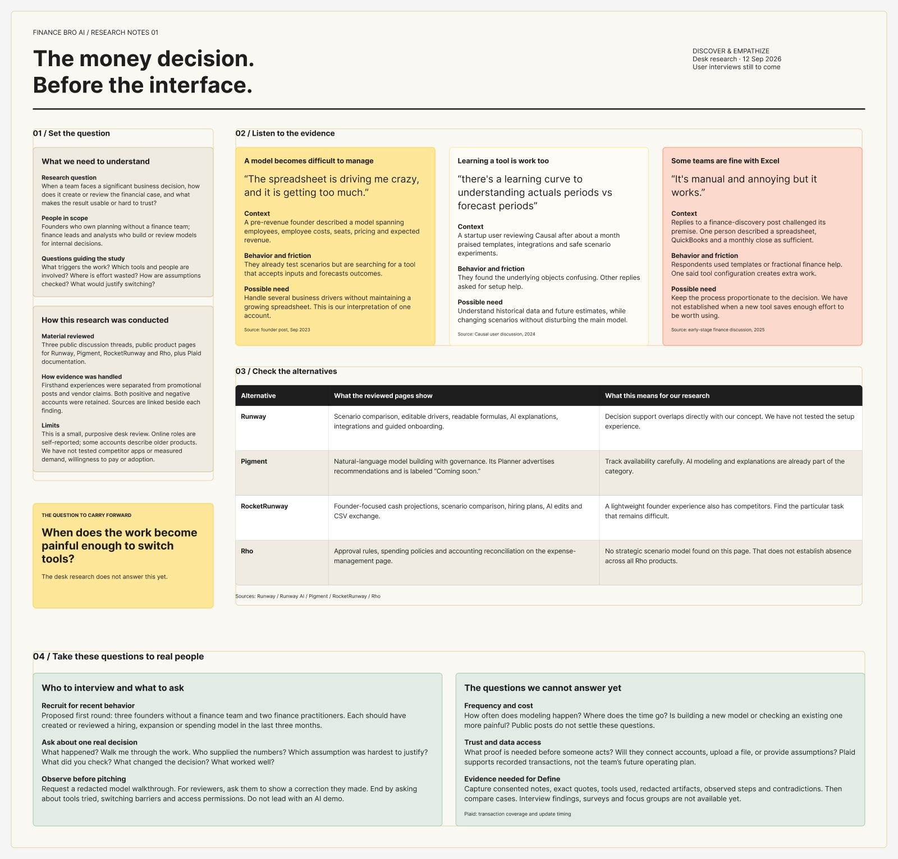
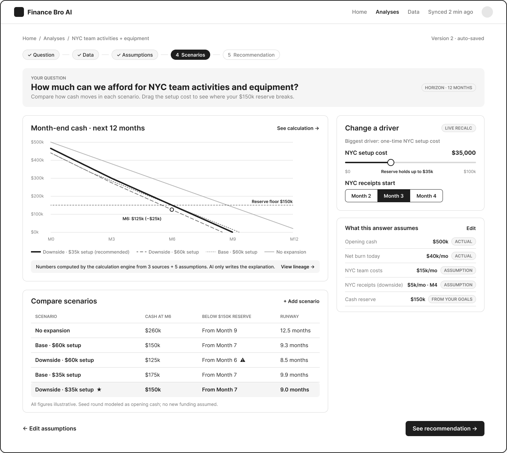
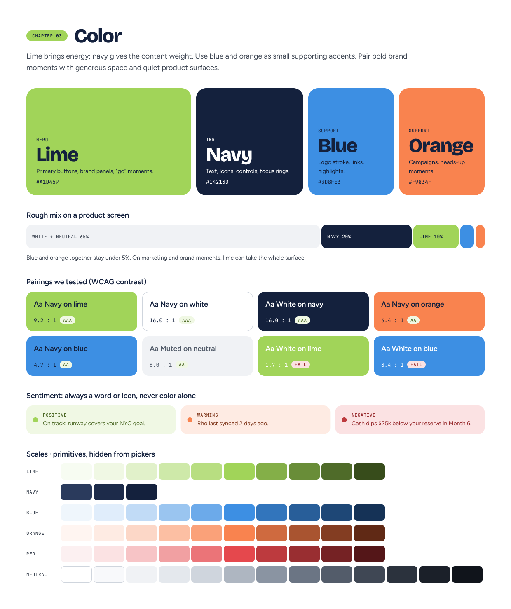
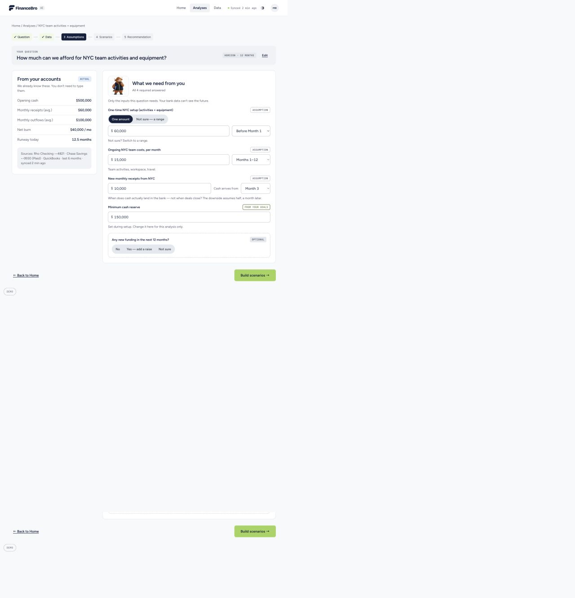
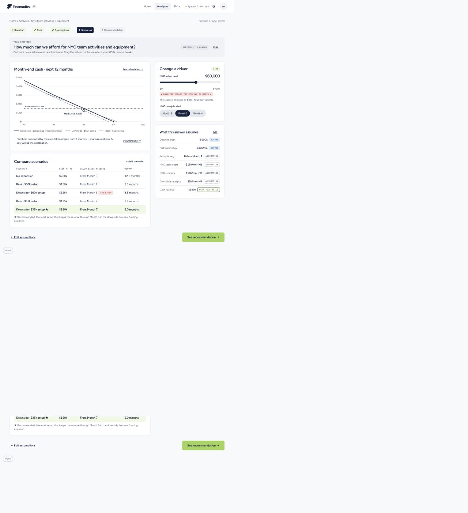
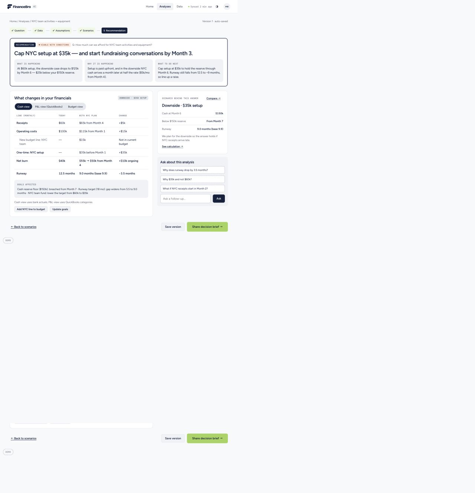
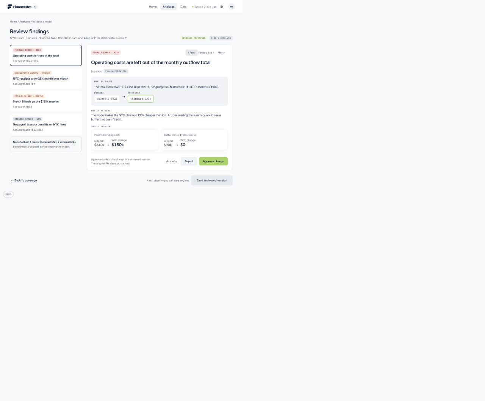

The spreadsheet keeps growing.
One founder described a model spanning employees, costs, seats, pricing and expected revenue. It suggested a need to handle several drivers without making the founder maintain an increasingly complex spreadsheet.
Rho Hackathon / New York City / September 2026
🏆 Best Content WinnerA financial decision-making prototype that helps founders see what their next big move means for cash and runway. Built with my team in 24 hours at the NYC Rho Hackathon.

A founder can see today's cash and monthly spending. Hiring a team or expanding to a new city asks something harder: when will the new costs hit, when might revenue arrive, and how much cash needs to remain untouched?
Our design question was: How might we help a founder pressure-test one consequential decision and understand the reasoning behind the answer?
One fictional seed-stage company. One 12-month forecast. A $150k cash reserve to protect. This gave the team a specific decision to design and build end to end within 24 hours.
Fieldnote Labs is sample data, not a real customer.The team reviewed three public discussion threads, competitor product pages and Plaid documentation. We separated firsthand accounts from vendor claims and kept contradictory evidence in the board.
One founder described a model spanning employees, costs, seats, pricing and expected revenue. It suggested a need to handle several drivers without making the founder maintain an increasingly complex spreadsheet.
A planning-tool user valued safe scenario experiments but found the difference between actual and forecast periods confusing. We treated clear labels and editable assumptions as product requirements to explore.
Other founders said a spreadsheet, accounting software and a monthly close were enough. The prototype therefore needed to earn its place by making one decision easier to understand, not by promising to replace every finance workflow.

Research boundary: This was desk research, not completed customer interviews. The board explicitly lists interviews with founders and finance practitioners as the next step. The findings informed a prototype hypothesis; they do not establish market demand or usability results.
We framed two provisional users: a founder creating the case for a major spend, and a finance reviewer checking a model before that decision is made. The founder path became the main demo; model review became the second path.
For the first path, the job was to take a question, surface the relevant financial baseline, ask for the future assumptions that bank records cannot supply, then show how the answer changes in a downside case.
The FigJam work moved from six linked feature wireframes to a full low-fi journey. The core path kept the user oriented while asking only for inputs that could change the NYC decision.
Show the sample company's cash, burn, source coverage and goals before asking for a plan.
Begin with a business question, then collect setup cost, ongoing team costs, receipt timing and reserve floor.
Put the baseline, base and downside cases on the same chart; expose the driver that changes the result.
Pair the recommendation with its conditions, calculation and next action.

What we questioned: The board calls out whether the Home charts feel too much like a dashboard, whether users understand ACTUAL and ASSUMPTION tags, and whether founders would connect real accounts during a demo. These were questions for testing, not findings from a completed usability study.
The early direction put a large lime surface, heavy headline, pill controls and ten equally prominent decision tiles on the first screen. The team refined the hierarchy: lead with company context and four financial metrics, put the question in one clear entry point, and move the broader decision areas into a disclosure.
The existing Figma system supplied the FinanceBro mark, lime and navy palette, type styles and reusable illustrations. The interface uses lime for the primary action and quieter neutral surfaces for calculations, warnings and recommendations.

The clickable prototype carries the same NYC decision through guided questions, scenarios and a recommendation. It also demonstrates a separate model-review flow.
Cash and burn are shown as actuals. The founder supplies future costs, receipt timing and the reserve they want to protect. Ranges and required-field checks handle uncertainty without silently inventing values.

At $60k in setup costs, the modeled downside falls to $125k by Month 6, below the $150k reserve. Reducing setup to $35k holds the reserve through Month 6. The slider, chart and scenario table update from the same calculation engine.

The recommendation caps NYC setup at $35k and suggests starting fundraising conversations by Month 3. It states the conditions behind that advice, the remaining runway risk and a path back to the calculation.

In the sample workbook, a formula omits $15k of monthly NYC costs. The review points to the affected cells and previews Month-6 cash falling from $240k to $150k. The original stays intact while the user approves or rejects the proposed change.

Prototype scope: The product uses fictional company data, simulated connections and a deterministic browser calculation engine. It has no live bank integration, backend or AI API calls. The NYC team decision is the fully modeled example.
The winning content
🏆 Rho Hackathon · Best ContentOur team framed the demo around a founder's real question, then showed how a change in assumptions affects cash and runway. The video won Best Content at the hackathon.
Watch the winning video on X ↗In 24 hours, the team moved from a documented research question and low-fi journey to a clickable product demo and an award-winning video. The working example lets someone adjust a cost, watch a reserve threshold change, and inspect the calculation behind the recommendation.